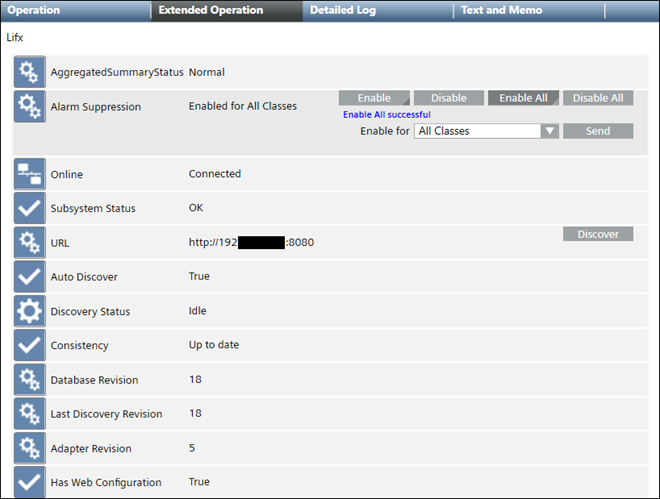

Properties and Commands of SORIS thingAdapter Objects
The following properties and commands display in the Extended Operation tab.

Property | Description | Commands |
AggregatedSummaryStatus | Highest priority status that is currently active for an object. | — |
Alarm Suppression | When this feature is enabled for specific system objects, any alarms coming from those objects are suppressed in the management platform. You can enable suppression for one alarm class or all alarm classes. |
|
Online | Possible values:
| — |
Subsystem Status | Shows default values that can be changed by the adapter developer:
| — |
URL | Adapter address and port number. If the auto discover feature has not been programmed into the adapter, the Discover command can be used to manually add one or more thingAdapter objects to the adapter. |
|
Auto Discover | Possible values:
| — |
Discovery Status | Current status of discovery. Normally, the status displays | — |
Consistency | Possible values:
| — |
Database Revision | Revision number corresponding to a change in the adapter such as adding or removing a thingAdapter object, changing a date, and so on. | — |
Last Discovery Revision | Revision for the last manual discovery. | — |
Adapter Revision | Current revision number for the selected adapter. | — |
Has Web Configuration | Possible values:
| — |